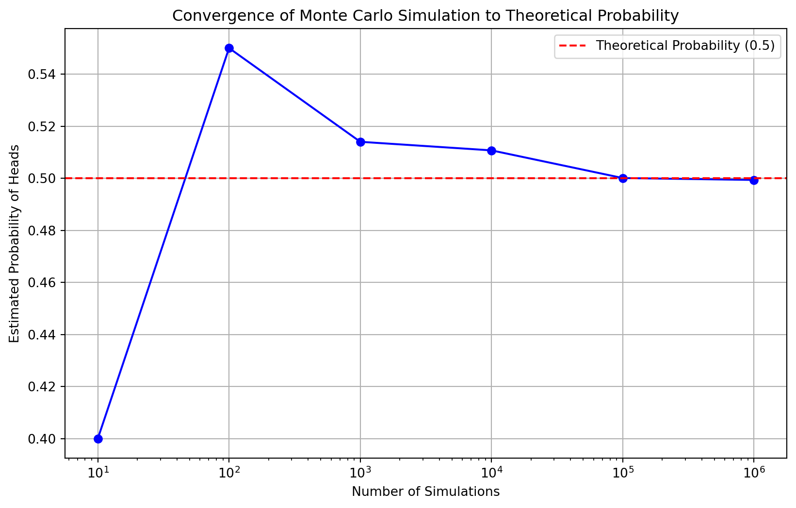
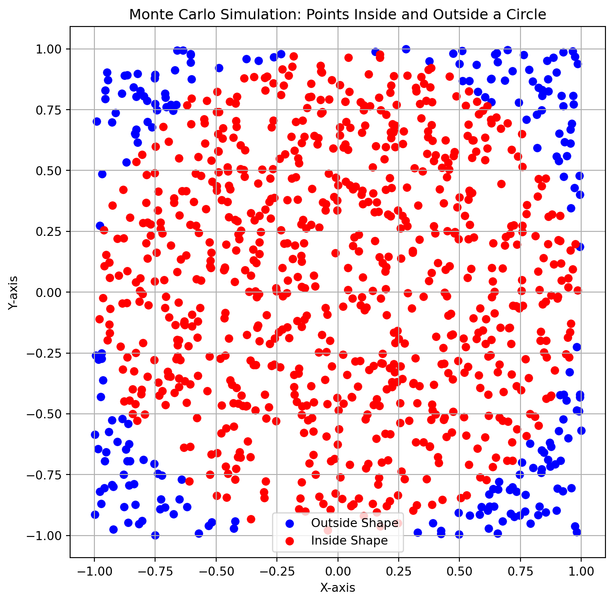

Exploring Probabilities with Monte Carlo Simulations
code
Author
Stephen Owesney
Introduction
In the vast landscape of probability theory and random variables, Monte Carlo simulations stand as powerful navigational tools, offering a unique lens through which we can explore and understand the uncertainties inherent in various phenomena. Named after the illustrious Monte Carlo Casino in Monaco, where chance plays a central role, these simulations harness the power of randomness to estimate probabilities and model complex systems. In this exploration, we embark on a journey that intertwines the elegance of probability theory with the unpredictability of random variables, using Monte Carlo simulations as our guiding light. Through the art of random sampling, we’ll unravel the mysteries of chance, casting a digital die to uncover patterns, distributions, and the very essence of uncertainty itself. Join us as we delve into the world of Monte Carlo simulations, where the convergence of mathematics and randomness opens new doors to understanding the inherent unpredictability woven into the fabric of probability and random variables.
Monte Carlo Simulation Simple Demonstration
Now, let’s embark on a hands-on journey to demystify the magic of probability theory and random variables using a simple yet powerful example: estimating the probability of getting heads in a fair coin toss.
Picture yourself holding a fair coin. When you flip it, the outcome is uncertain – it could be heads or tails, a classic example of a random variable. The intrigue lies in understanding the behavior of this coin, and that’s where probability theory steps in.
In the world of probability theory, we’re curious about the likelihood of specific outcomes. Here, our burning question is: What’s the probability of landing heads in a single toss? This is where Monte Carlo simulations come into play – a dynamic tool that transforms uncertainty into insight.
Imagine taking that fair coin and flipping it not just once, but thousands of times in a virtual environment. Each flip is like a mini-experiment, and the more experiments we conduct, the better we can grasp the elusive nature of our random variable – the coin toss. Monte Carlo simulations let us explore this randomness by simulating scenarios, recording outcomes, and gradually revealing the underlying probabilities.
Here we run the simulation of the coin toss 10,000 times resulting in a relatively accurate estimation of what the probability should theoretically be.
Code
import numpy as np# Function to simulate a coin tossdef simulate_coin_toss(num_simulations): outcomes = np.random.choice(['Heads', 'Tails'], size=num_simulations) heads_count = np.sum(outcomes =='Heads') probability_heads = heads_count / num_simulationsreturn probability_heads# Number of simulationsnum_simulations =10000# Run the Monte Carlo simulationestimated_probability = simulate_coin_toss(num_simulations)print(f"Estimated Probability of Heads: {estimated_probability}")
Estimated Probability of Heads: 0.4969
Now, let’s visualize how our estimated probability converges to the true theoretical probability as we increase the number of simulations. In this demonstration, the number of simulations increases by an order of magnitude each iteration which can be more approachably shown by graphing the x-axis on a logarithmic scale.
Code
import matplotlib.pyplot as plt# Function to run Monte Carlo simulations with varying sample sizesdef run_simulations(): num_simulations_list = [10, 100, 1000, 10000, 100000, 1000000] probabilities = []for num_simulations in num_simulations_list: estimated_probability = simulate_coin_toss(num_simulations) probabilities.append(estimated_probability)return num_simulations_list, probabilities# Run simulationsnum_simulations_list, probabilities = run_simulations()# Plotting the resultsplt.figure(figsize=(10, 6))plt.xscale('log')plt.plot(num_simulations_list, probabilities, marker='o', linestyle='-', color='b')plt.axhline(y=0.5, color='r', linestyle='--', label='Theoretical Probability (0.5)')plt.title('Convergence of Monte Carlo Simulation to Theoretical Probability')plt.xlabel('Number of Simulations')plt.ylabel('Estimated Probability of Heads')plt.legend()plt.grid(True)plt.show()

It is important to note that everytime you run a monte carlo simulation, the results will vary due to the stochastic nature of the process. Above you should see that, generally, as the number of simulations increases so does the accuracy of the estimation. However, other factors may affect the convergence of the estimate such as initial biases, statistical variability, and the nature of the specific problem you are applying the algorithm to which may skew the reliability of the results.
Monte Carlo Simulation: Estimating Circle Area
Next, we can apply a monte carlo simulation technique to a more interesting problem: estimating the area of a shape. This could be useful in situations where you have a space and a subspace and it is difficult or unideal to model their relationship mathematically. In general, you can generate random points within the space and use the ratio of points that exist in the subspace to the points that exist in the entire space in order to estimate the dimensions of the subspace. For sake of simpilicity, here we can demonstrate this for a circle.
Consider a circle with radius.. \[ r = 1 \] ..centered at the origin. The formula for the area of a circle is given by.. \[ A = pi*r^2 \] We can estimate this area by generating random points in a bounding square and determining the ratio of points that fall inside the circle.
Code
import numpy as npimport matplotlib.pyplot as plt# Function to check if a point is inside the shape (e.g., a circle)def is_inside_circle(x, y):return x**2+ y**2<=1# Function to run Monte Carlo simulations and visualize the pointsdef visualize_monte_carlo(num_points): inside_points_x = [] inside_points_y = [] outside_points_x = [] outside_points_y = []for _ inrange(num_points): x = np.random.uniform(-1, 1) y = np.random.uniform(-1, 1)if is_inside_circle(x, y): inside_points_x.append(x) inside_points_y.append(y)else: outside_points_x.append(x) outside_points_y.append(y)# Plotting the results plt.figure(figsize=(8, 8)) plt.scatter(outside_points_x, outside_points_y, color='blue', label='Outside Shape') plt.scatter(inside_points_x, inside_points_y, color='red', label='Inside Shape') plt.title(f'Monte Carlo Simulation: Points Inside and Outside a Circle') plt.xlabel('X-axis') plt.ylabel('Y-axis') plt.legend() plt.axis('equal') plt.grid(True) plt.show()return inside_points_x# Visualize the Monte Carlo simulation with 1000 pointsnum_points =1000inside_points_x = visualize_monte_carlo(num_points)

Results
After running the Monte Carlo simulation with 1000 points, we can calculate the estimated area of the circle with.. \[ Estimated Area = ( Points Inside Circle / Total Points ) * Area of Square \] This estimate should converge on the value of pi, becoming more accurate as you add more points to the simulation!
Code
# Calculate the estimated area using the ratio of points inside the circleestimated_area = (len(inside_points_x) / num_points) *4# Area of the bounding square is 4# Print the estimated areaprint(f"Estimated Area of the Circle: {estimated_area:.4f}")
Estimated Area of the Circle: 3.1160
Imagine scenarios where relationships between spaces and subspaces defy direct mathematical representation—here, Monte Carlo simulations shine. By generating random points and gauging their distribution, we can estimate dimensions, areas, and probabilities with remarkable accuracy.
The applications are vast and varied. In finance, Monte Carlo simulations aid risk assessment and portfolio optimization. In physics, they model particle interactions. For logistics, they optimize supply chain decisions. In machine learning, their adaptability shines—training data augmentation, uncertainty estimation, and reinforcement learning all benefit from the Monte Carlo approach.